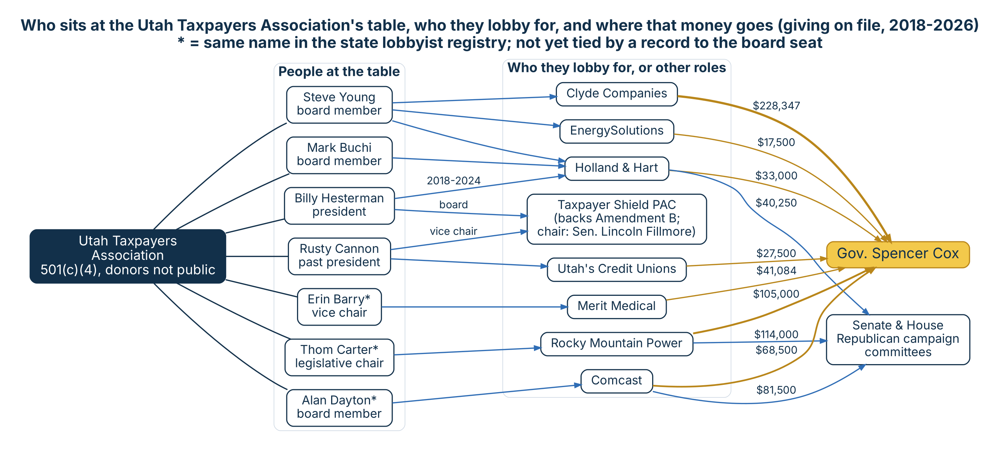

News stories often quote the Association's tax numbers as plain information, and it is backing Amendment B. Its donors are not public. Its leaders, lobbyists and sponsors are, and so is where those sponsors send their political money.
StatewideCASE 2026-UTA-01 · Posted Oct. 21, 2026 · Updated Oct. 21, 2026
Part 1 of 2: Who sits at the table, and where the money goes
2024 Form 990 (via ProPublica and Candid). Total revenue $656,435.
Forms 990, via Candid's financial trends table (Nonprofit Finance Fund analysis). Shares are of total revenue.
| Year | Total revenue | Membership dues | Other grants and contributions | Program services |
|---|---|---|---|---|
| 2020 | $554,705 | 75.9% | 4.6% | 19.5% |
| 2021 | $520,583 | 85.8% | 4.7% | 9.4% |
| 2022 | $547,147 | 84.0% | 6.4% | 9.5% |
| 2023 | $700,350 | 63.1% | 4.3% | 32.5% |
| 2024 | $656,435 | 0.0% | 73.4% | 26.6% |
In 2024 the membership-dues line drops to zero and the contributions line rises to about the same share. The filings do not say why, and we have not found an explanation. Either way, the payers' names are not public. The Association says it has more than 2,500 business and individual members.
Form 990 for 2024 (file 870189230_2024_202513159349302046_990.pdf), read as rendered pages Oct. 21, 2026.
| Line on the return | Amount |
|---|---|
| Contributions reported on the "Federated campaigns" line (1a) | $460,510 |
| All other contributions, gifts and grants (1f) | $10,000 |
| Membership dues (1b) | blank |
| Program revenue: Special Projects | $74,600 |
| Program revenue: Taxes Now Conference | $50,009 |
| Program revenue: Legislative Outlook Conference | $35,750 |
| Program revenue: "PAC Donations" | $14,106 |
| Fundraising events: $32,902 raised, $21,464 in direct costs | $11,438 net |
The return describes its one program as "Tax seminars, budget analysis & legislative activities" ($525,094 in expenses). It answers "No" to spending on political campaigns for or against candidates. On Schedule C it answers "No" to whether 90% or more of members' dues were nondeductible, and "No" to whether its in-house lobbying was $2,000 or less; the dollar lines that follow are blank on the public copy. The return does not explain what "PAC Donations" means as program revenue.
In 2024 the Association reported $617,757 in expenses ($525,094 for programs, $92,663 for administration, nothing for fundraising), $108,541 in assets (mostly $104,989 in cash) and $10,200 in liabilities, leaving net assets of $98,341 at year's end. Its 990 lists an independent audit, prepared by Skidmore & Olausson PLLC of North Salt Lake.
For the longer view, Candid's charts of the Association's 990s from 2011 to 2024 show yearly revenue between roughly $430,000 and $700,000, with the high point in 2023. Total assets peaked near $200,000 in the mid-2010s and fell to about $35,000 around 2021 before recovering to $108,541 in 2024. (Those older figures are read from Candid's bar charts, so they are approximate.)
No record ties the Association to a political party. Its political action committee is where its politics show up in the records.
The Utah Taxpayers Association PAC (created 2008, president and treasurer Billy Hesterman) reported giving $57,125 from November 2021 to Oct. 7, 2026. The recipients in the reports we read are all Republicans:
PAC reports, Nov. 2021 to Oct. 7, 2026, disclosures.utah.gov.
Its member brochure, "Introduction to UTA" (a PowerPoint saved as PDF on May 26, 2021, with Rusty Cannon listed as president), says:
The brochure asks readers to "join," but it does not list members, membership levels or dues.
Its LinkedIn company page (viewed Oct. 21, 2026) says it operates "as a 501c4," lists Draper as its location and 2 to 10 employees, and says: "Members of the association include over 1,000 dues paying individuals, small businesses and many of the largest employers in the state." That page still describes members as dues-paying, while the 2024 tax return leaves the dues line blank. The page does not name any members.
In November 2015 the Association, the Utah Taxpayers Legal Foundation and Libertas Institute sued Lt. Gov. Spencer Cox, Attorney General Sean Reyes and two county attorneys in federal court over H.B. 43 (2013). That law required nonprofits that spent $750 or more a year on political activity or ballot issues to report the names and addresses of people who gave them money, including membership dues, for publication online.
That settlement is part of why no list of the Association's members or dues payers appears in state records.
The law, as settled in 2016, lets the Association's own spending stay unnamed, while its PAC must report. The same rule applies to every nonprofit doing protected advocacy, whatever its politics.
On March 19, 2026, the Association released its 2026 Legislative Scorecard. It tracked 53 bills and scored lawmakers on 10 votes. Anyone who voted with the Association at least 85% of the time, meaning on all but one scored bill, was named a "Friend of the Taxpayer." 34 lawmakers made the list: 30 in the House (40% of the House) and 4 in the Senate (14% of the Senate).
All 34 are Republicans. The scorecard does not print party; we checked each name against the Legislature's current membership, and Trevor Lee against his 2026 session seat. Five of the ten lawmakers who received money from the Association's PAC are on the list: Fillmore, McCay, Wilcox, Kyle and Hawkins.
The minutes of the Feb. 11, 2026 meeting list the seven members of the Senate Revenue and Taxation Committee: Sen. Dan McCay (chair), Brady Brammer, Luz Escamilla, Lincoln Fillmore, Wayne Harper, Kirk Cullimore and Chris Wilson.
The minutes list every member under each vote without marking who voted which way, so we do not report individual votes from them.
Officers and directors come from Utah's business registry (updated Nov. 17, 2025), the 2024 Form 990 and the Association's website. We checked each name against the state lobbyist registry.
* = same name in the lobbyist registry; not tied by a record to the board seat.
| Person | Role | What the registries show |
|---|---|---|
| Steve Young | Board member (his Holland & Hart bio) | Registered lobbyist for Holland & Hart, Clyde Companies, Staker Parson, EnergySolutions, Utah Petroleum Association, Intermountain Power Agency, Cargill and the Association itself |
| Mark Buchi | Board member (the Association says since 1990) | Holland & Hart and Intermountain Power Agency since Dec. 18, 2012 |
| Billy Hesterman | President since July 2024 | The Association since 2019; Holland & Hart from Oct. 29, 2018 to Aug. 12, 2024 |
| Rusty Cannon | Past president (paid $95,397 in 2024) | The Association 2018–2024; now the Utah Credit Union Association, which he leads |
| Erin Barry | Vice chair (2024 Form 990) | A lobbyist named Erin Barry: Merit Medical since 2016 |
| Thom Carter | Legislative chair | A lobbyist named Thomas Carter: PacifiCorp/Rocky Mountain Power since 2022 |
| Alan Dayton | Board member | A lobbyist named Alan Dayton: Intermountain Healthcare and Comcast since 2013 |
| Jennifer Somers | Past chair (2024 Form 990); director (business registry) | A lobbyist named Jennifer Somers: Comcast since 2016 |
| Cameron Cowan | Board member (2024 Form 990) | Not in the lobbyist registry. Utah's business registry lists a Cameron Cowan as owner and registered agent of the assumed name "Intermountain Power Agency" (#7036642-0151), at the agency's South Jordan address, updated May 27, 2026 |
Thirteen people have registered to lobby for the Association since 2012. Several also represent other clients.
| Lobbyist | Registered for the Association | Some other clients |
|---|---|---|
| Steve Young | 2014– and 2022– (still active) | Holland & Hart, Clyde Companies, EnergySolutions, IPA |
| Billy Hesterman | 2019– (still active) | Holland & Hart, IPA, AES, Salt Lake City |
| Rusty Cannon | 2018–2024 | Utah Credit Union Association |
| Howard Stephenson | 2019–2022 | Scrible, Arizona State University; Association president about 1990–2021 |
| Kate Bradshaw | 2016–2020, 2021–2023 | Holland & Hart, IPA, Intermountain Health Care, 1-800 Contacts |
| Royce Van Tassell | 2013–2016 | IPA, Utah Association of Public Charter Schools |
| Chase Everton | 2012–2014 | Meta, 1-800 Contacts, Qualtrics; partner, Lincoln Hill Partners |
| Spencer Nitz | 2015–2022 | None other |
| Malah Armstrong | 2022– | None other |
| Heidi Erickson | 2014– | None other |
| Maxwell Miller | 2013– | None other |
| Bren Robinson | 2018–2020 | Utah Mining Association |
| Kelsey White | 2014– | None other |
Dates come from each person's registry folder. Where a folder lists a start date and no end date, we show only the start. Every client and date is in Part 2.
The Association lists its sponsors on boards for its 2026 Legislative Outlook Conference and its "Teed Off On Taxes" golf tournament. We pulled 2018–2026 campaign finance reports for those names from disclosures.utah.gov.
$25,714.57 in all. Top 10 givers shown.
| Sponsor | Given, 2018–2026 | Biggest recipient |
|---|---|---|
| Comcast | $483,800 | Gov. Cox $68,500 |
| Reynolds American / RAI | $396,115 | AG Derek Brown $105,000 |
| 1-800 Contacts | $388,698 | AG Derek Brown $63,132 |
| Nucor | $366,527 | Senate GOP committee $57,250 |
| WCF Insurance | $359,248 | Gov. Cox $102,000 |
| Gold Cross | $349,185 | Senate GOP committee $89,500 |
| Utah's credit unions | $330,328 | Senate GOP committee $28,250 |
| Maverik | $302,254 | Senate GOP committee $44,250 |
| AT&T | $253,690 | Gov. Cox $58,000 |
| Holland & Hart | $220,125 | Gov. Cox $33,000 |
| Regence | $215,750 | Senate GOP committee $28,250 |
| Dominion Energy | $156,796 | Gov. Cox $72,500 |
| Merit Medical | $156,334 | Gov. Cox $41,084 |
Totals are contributions reported by the people and committees who received them, matched on the donor's name and with gifts to a company's own PAC left out. Fifteen smaller sponsors are in the workbook. Rocky Mountain Power, Zions, Chevron, Lumen and EnergySolutions come from earlier Hive pulls and are in the next section.
Fifteen companies and PACs tied to the Association's people and sponsors, added together. These are partial totals: only these companies, and only what is on file.
Clyde Companies, Rocky Mountain Power, Utah Realtors PAC, Larry H. Miller Co., Lincoln Hill PAC, Lincoln Hill Partners PAC, Utah Bankers PAC, EnergySolutions, Utah Petroleum Association PAC, Chevron, Lumen, Zions PAC, Ivory Homes, Union Pacific and the Association's PAC.
| Company | Tie to the Association | To Gov. Cox |
|---|---|---|
| Clyde Companies | Steve Young lobbies for it (since 2023) | $228,347 |
| Utah Realtors PAC | 2026 sponsor | $225,500 |
| Rocky Mountain Power | 2026 sponsor; Thom Carter (name match) lobbies for it | $105,000 |
| Larry H. Miller Co. | 2026 sponsor | $103,000 |
| Lincoln Hill Partners PAC | Firm of Chase Everton | $82,500+ |
| Lincoln Hill PAC | Firm of Chase Everton | $80,000 |
| Comcast | 2026 sponsor; Alan Dayton and Jennifer Somers (name matches) lobby for it | $68,500 |
People, the companies they lobby for, and money on file to Gov. Cox (gold) and the Republican caucus committees, 2018–2026.

For what Amendment B does, see The 2026 Amendments and Amendment B: Myth vs. Fact.
Having lobbyists on a nonprofit's board is legal. The registry and the disclosure reports exist so the public can see these relationships. This page shows them side by side.
None yet. New records will be added here with their dates.
Tap a card to see what it means.
Posted Oct. 21, 2026.
Utah Division of Corporations business registry, Utah Taxpayers Association, entity #658683-0140 (principals updated Nov. 17, 2025).
ProPublica Nonprofit Explorer: Utah Taxpayers Association Form 990s (2024 revenue, officers, board lists FY2013–FY2024).
Utah Taxpayers Association, purpose and objectives; 2025 Legislative Scorecard (read Oct. 21, 2026); 2026 Legislative Outlook Conference and golf tournament sponsor boards, utahtaxpayers.org (read as images Oct. 20, 2026).
Utah Taxpayers Association, 2026 Legislative Scorecard, and its March 19, 2026 news release naming the 2026 Friends of the Taxpayer (copy from Utah Policy shared with the Hive Oct. 21, 2026). Party checked against Wikipedia's current Utah House and Senate member lists, Oct. 21, 2026.
Minutes of the Senate Revenue and Taxation Standing Committee, Feb. 11, 2026 (le.utah.gov; text shared with the Hive Oct. 21, 2026).
Institute for Free Speech, litigation backgrounder, Utah Taxpayers Association et al. v. Cox et al. (Nov. 17, 2015); Institute for Free Speech, settlement report (July 14, 2016); Utah Taxpayers Association, "State Agrees to Free Speech Protection" (July 14, 2016).
Utah Taxpayers Association company page, LinkedIn (linkedin.com/company/utah-taxpayers-association), text shared with the Hive Oct. 21, 2026.
Utah Taxpayers Association, "Introduction to UTA" member brochure (8 pages, PDF created May 26, 2021; copy shared with the Hive Oct. 21, 2026; read from rendered pages and text).
Candid (GuideStar) profile, revenue, expense, asset and liability charts from Form 990 filings 2011–2024 (screenshot shared with the Hive, Oct. 21, 2026).
Utah business registry, "Intermountain Power Agency" assumed name, #7036642-0151 (pasted as text by the Hive, Oct. 21, 2026).
Utah Taxpayers Association Form 990 for 2024 (file 870189230_2024_202513159349302046_990.pdf, sent by Shauna Oct. 21, 2026; Part VIII, Part III and Schedules C and O read as rendered pages).
Candid (candid.org) profile of the Utah Taxpayers Association: grants received (Americans for Tax Reform, EIN 52-1403587, $15,000, FY2022; IHC Health Services Inc, EIN 94-2854057, $9,100, FY2018; profile updated Sept. 10, 2026) and board list as of Dec. 31, 2024 from the Form 990 (profile updated Jan. 15, 2026). Pasted from Candid by the Hive, Oct. 21, 2026.
Utah Lobbyist Registry: each person's folder, read Oct. 20, 2026. Folder numbers are in Part 2.
Utah campaign finance disclosures: yearly candidate, PAC, party and corporation reports, 2018–2026, pulled Oct. 20, 2026; Utah Taxpayers Association PAC and Taxpayer Shield PAC statements of organization and reports. Earlier Hive pulls for Clyde Companies, Rocky Mountain Power/PacifiCorp, EnergySolutions, Zions PAC, Chevron, Lumen, Utah Realtors PAC, Larry H. Miller Co., Lincoln Hill PAC, Utah Bankers PAC, Utah Petroleum Association PAC, Ivory Homes and Union Pacific.
 Utah Hive Politicsfrom the publisher of The Weber County HiveIndependent · Accountability · Journalism
Utah Hive Politicsfrom the publisher of The Weber County HiveIndependent · Accountability · Journalism